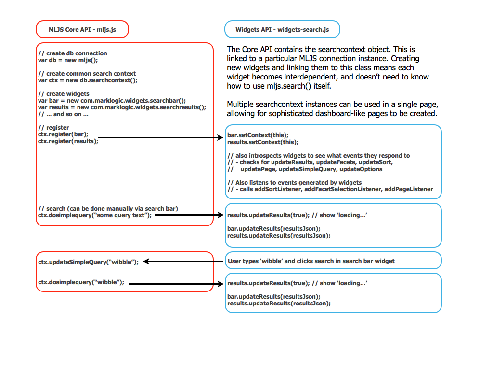

How Search Widgets work
The following diagram explains the main code workflow for a search app.

As you can see a search context object instance is used to bind widgets together. No widget knows of the existence of another one - the developer merely calls the register method on search context to bind a new widget to the search context.
The register() function is a convenience such that the application developer doesn't need to know what events and actions are supported by each widget instance in order to use them. It is required that all widgets adhere to the same naming convention for event listeners and actions. This convention is how the searchcontext object can introspect each widget to determine how it can be used.
In the above example both the search bar and results widgets have a setContext() method and an updateResults() event listener method. These are discovered by the searchcontext.register() function and called as appropriate.